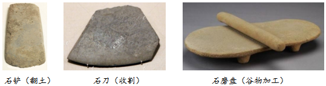
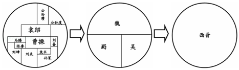

2019年北京市中考历史试题 · 选择题 第1、2、3、4、5题
1．（1.5分）考古发现是研究历史的重要证据。陕西西安半坡遗址出土的以下石器说明半坡原始居民（ ）

A．已从事农业生产B．以捕鱼狩猎为生
C．住半地穴式房屋D．会人工种植水稻
2．（1.5分）一位历史学家说，秦始皇的残酷无道达到离奇的境界；可是他统一中国的工作，用长远的眼光设计，又用精到的手腕完成。以下史实能支持后一种观点的是（ ）
①实行郡县制
②建造阿房宫
③统一度量衡
④修建骊山陵
A．①②B．①③C．②③D．②④
3．（1.5分）“自古书契多编以竹简，其用缣帛者谓之为纸。缣贵而简重，并不便于人……用树肤、麻头及弊布、鱼网以为纸。”下列人物中促成这一变化的是（ ）
A．李冰B．蔡伦C．祖冲之D．毕昇
4．（1.5分）如图示意图反映出（ ）

A．东汉末年军阀割据B．三国鼎立局面形成
C．统一趋势不断加强D．魏晋时期政权并立
5．（1.5分）阅读如表材料，可以比较出长城和大运河的共同点是（ ）
长城 | 大运河 |
秦汉时期，抵御了北方游牧民族南下，保护了中原北部地区的农业生产和人民生活 | 隋唐时期，成为联系南北的交通大动脉，加强了各地区之间的经济、文化联系 |
A．抵御了匈奴侵扰B．削弱诸侯国势力
C．促进了南北交流D．有利于巩固统一